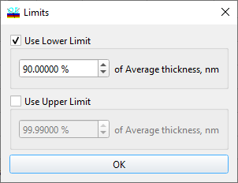

Limits Generator
Limits Generator
Navigation: OptiLayer Menu Commands > Synthesis Menu > Random Optimization >
Limits Generator
` <exhaustive_search_option.html>`__ ` <idh_random_optimization.html>`__ ` <rugatesynthesis.html>`__

The Limits Generator dialog allows the layer thickness constraints to be recalculated for Constrained Optimization, Inhomogeneities/Interlayers Refinement, Random Optimization, and Exhaustive Search procedures based on the current design layer thicknesses.